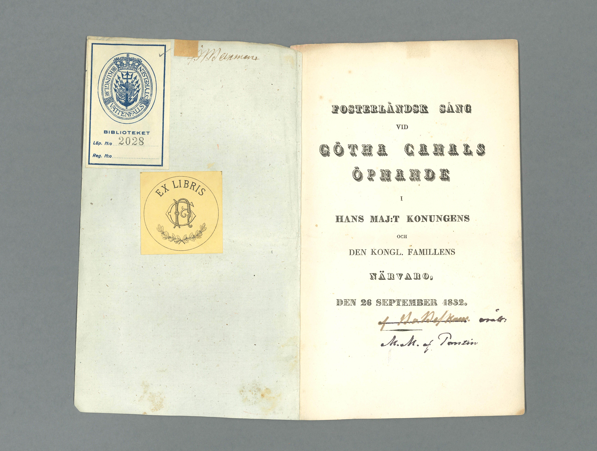
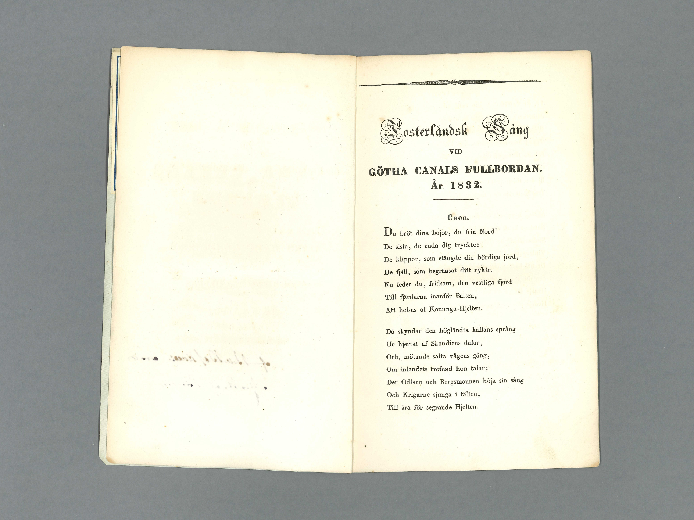
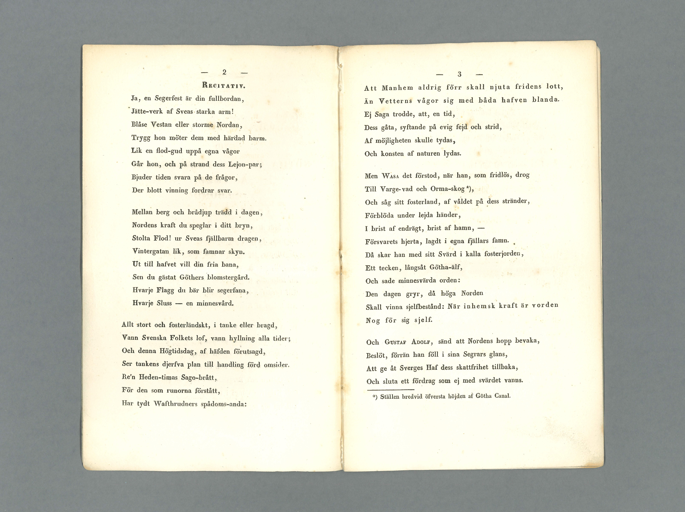
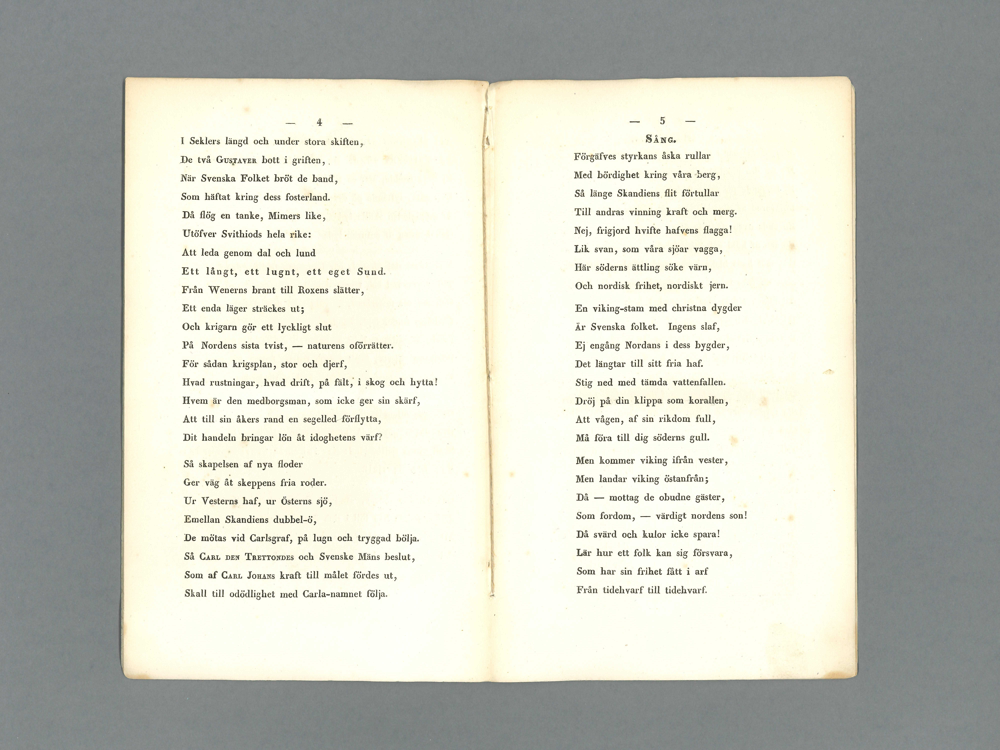
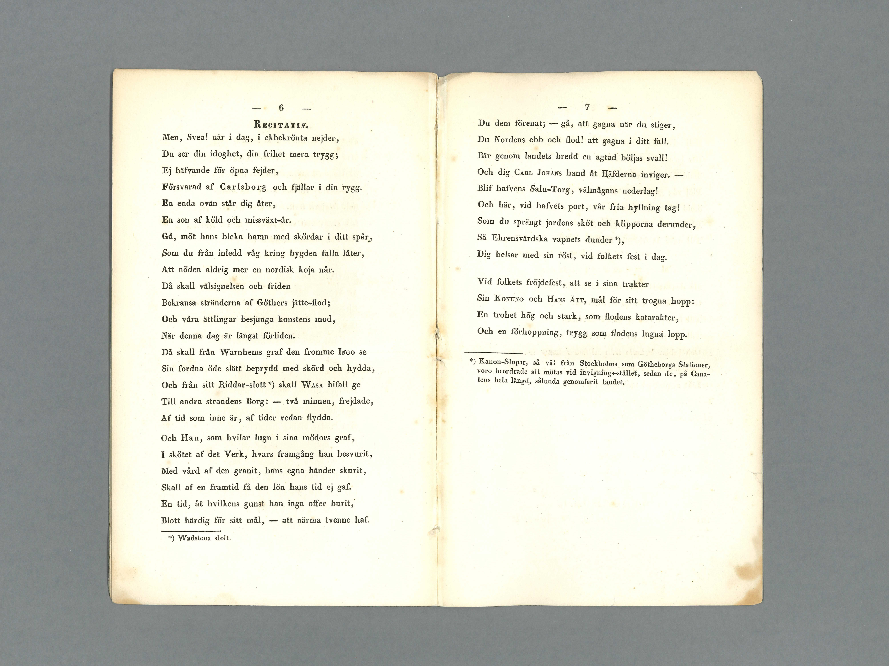
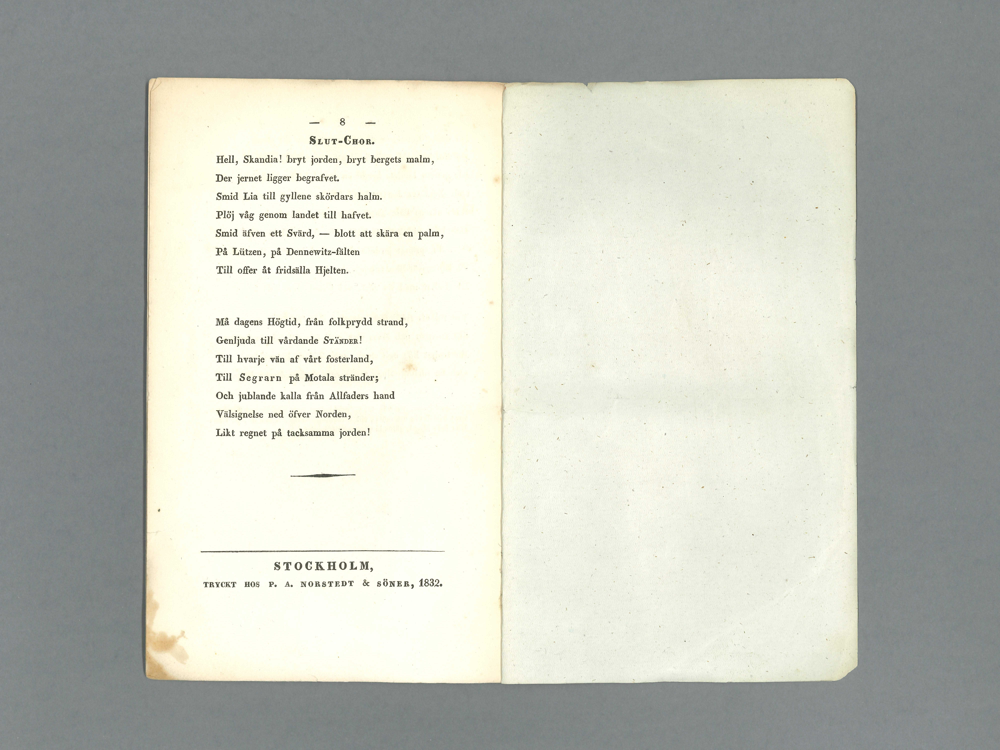
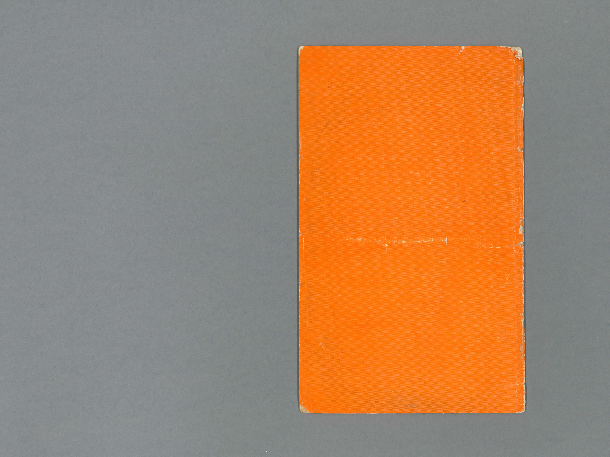

1 / 8

Bild på sånghäftets framsida.
2 / 8

Bild på sånghäftets första uppslag som visar insida omslag och titelblad.
3 / 8

Bild på sånghäftets andra uppslag som visar ett blankt blad och sångens första sida.
4 / 8

Bild på sånghäftets tredje uppslag som visar sångtextens andra och tredje sida.
5 / 8

Bild på sånghäftets fjärde uppslag som visar sångtextens fjärde och femte sida.
6 / 8

Bild på sånghäftets femte uppslag som visar sångtextens sjätte och sjunde sida.
7 / 8

Bild på sånghäftets sista uppslag som visar sångtextens åttonde sida och insida omslag.
8 / 8

Bild på sånghäftets baksida.